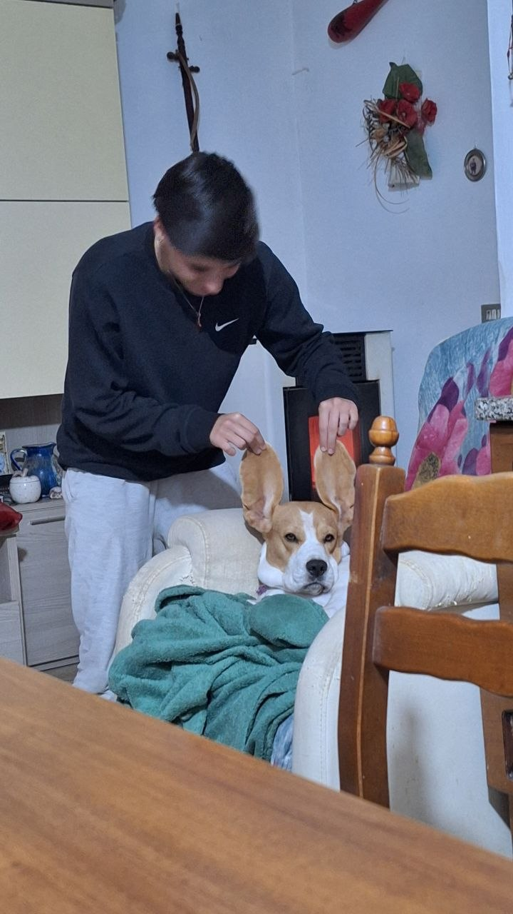
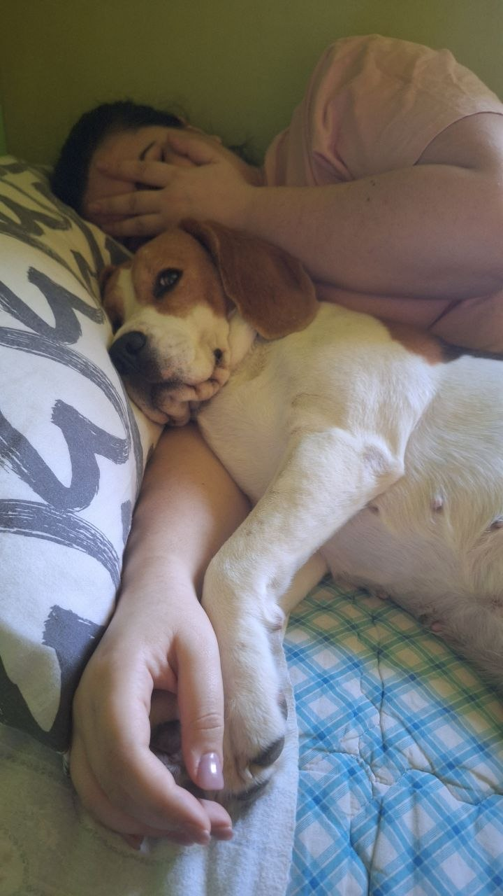
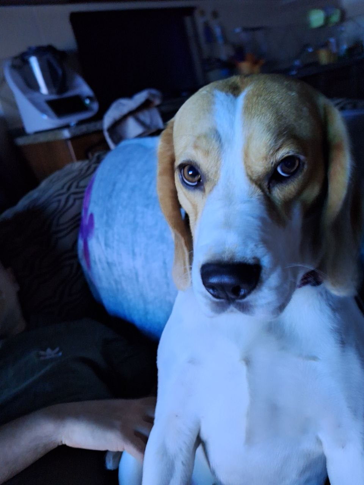
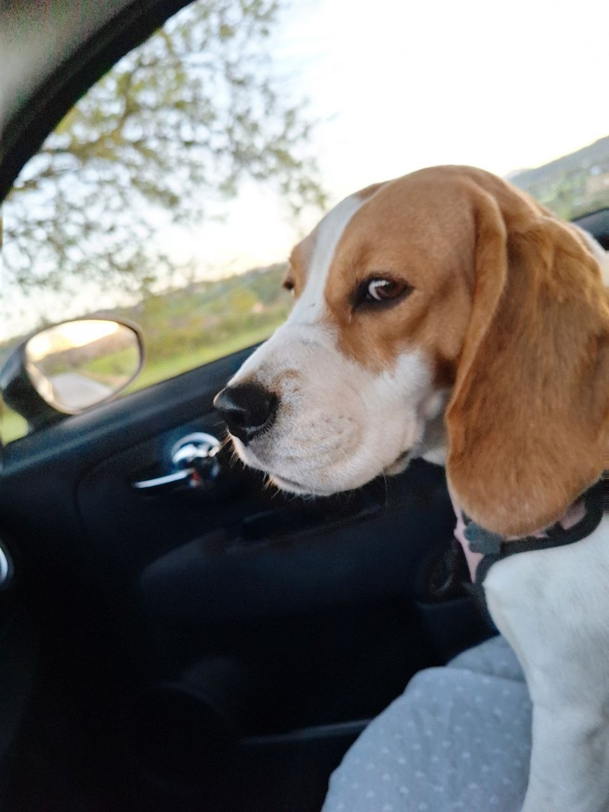
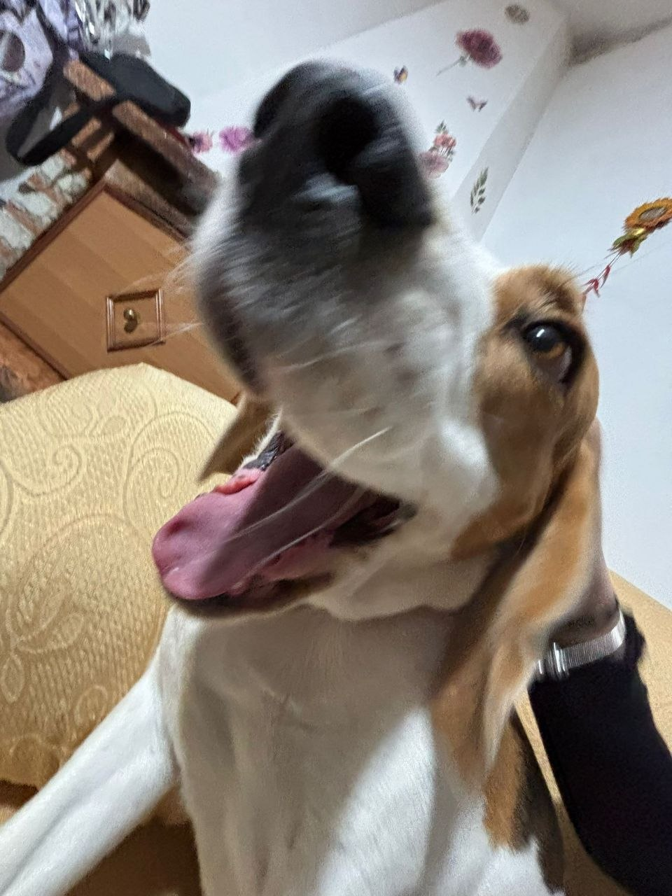
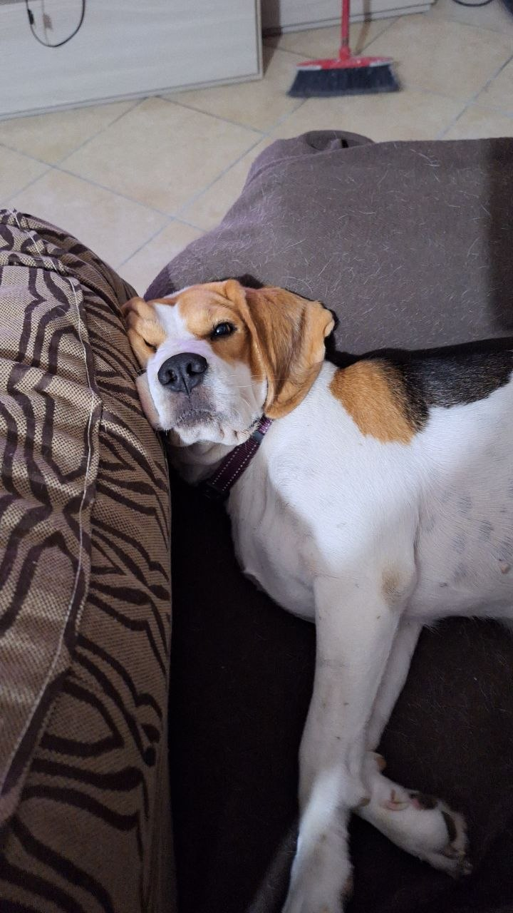
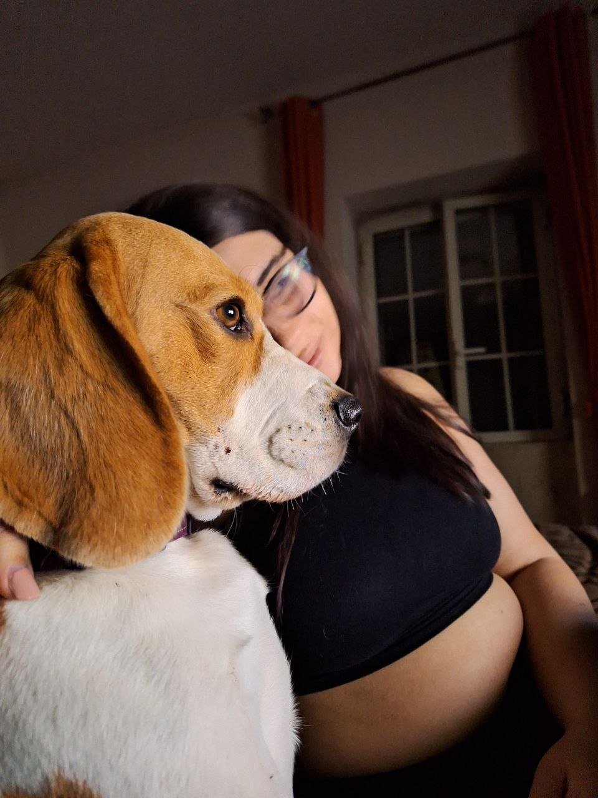
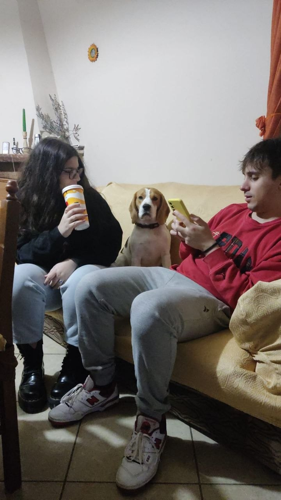
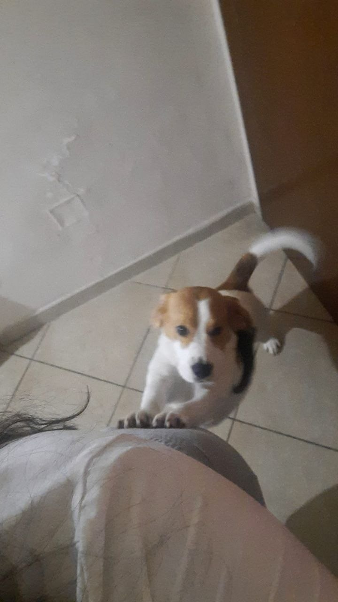
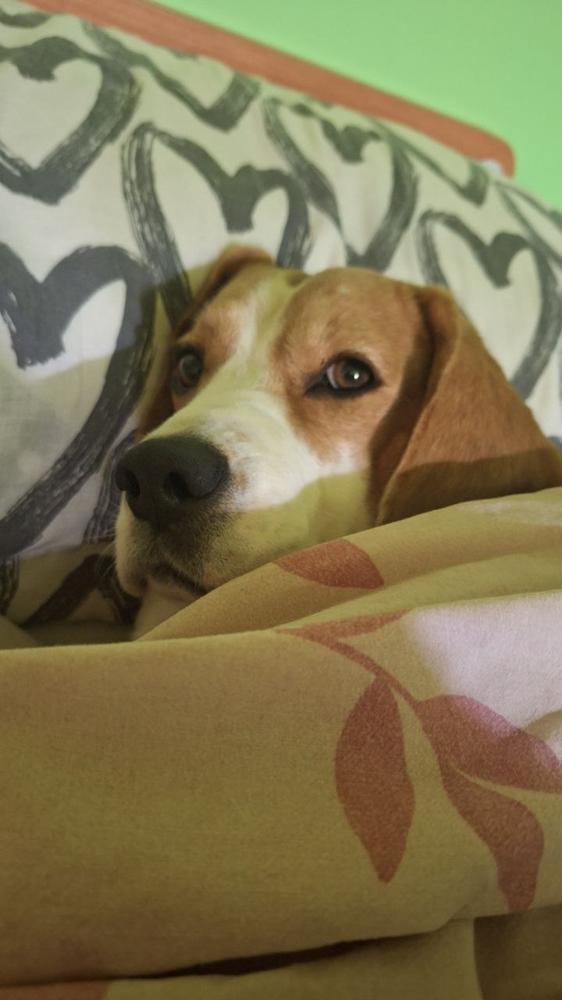

Finalmente ti ho trovata 🥹

Ho qualcosa di importante da dirti…

Ho capito che mancava qualcosa…
Quando dormivo, non avevo te come cuscino.
E con la mia intelligenza… ho capito tutto.
Quando dormivo, non avevo te come cuscino.
E con la mia intelligenza… ho capito tutto.

È vero…
Il mio padrone a volte sa essere un po’ scemo…
e anche parecchio insopportabile.
Il mio padrone a volte sa essere un po’ scemo…
e anche parecchio insopportabile.

Anche a me non fa scegliere la musica in macchina…
e questo, sinceramente, è assurdo.
Soprattutto perché la queen sono io.
e questo, sinceramente, è assurdo.
Soprattutto perché la queen sono io.

E io mi arrabbio tantissimo…
e glielo faccio sentire subito.
e glielo faccio sentire subito.

Però posso dirti una cosa?
Ci tiene davvero tanto a te…
anche se a volte sbaglia.
Ci tiene davvero tanto a te…
anche se a volte sbaglia.

Io certe cose le sento subito…
e quando ci sei tu,
si sta tutti un po’ meglio.
e quando ci sei tu,
si sta tutti un po’ meglio.

Guardaci…
questa è la mia famiglia.
E io la voglio tutta insieme.
Perché lui può sbagliare, può essere testardo…
ma una cosa è certa: ti ama davvero.
questa è la mia famiglia.
E io la voglio tutta insieme.
Perché lui può sbagliare, può essere testardo…
ma una cosa è certa: ti ama davvero.

E poi, a essere sinceri…
mi servi anche per qualcosa di fondamentale:
fare stretching come si deve.
mi servi anche per qualcosa di fondamentale:
fare stretching come si deve.

Direi che ho parlato abbastanza…
ora tocca a voi due.
Io torno a dormire.
ora tocca a voi due.
Io torno a dormire.